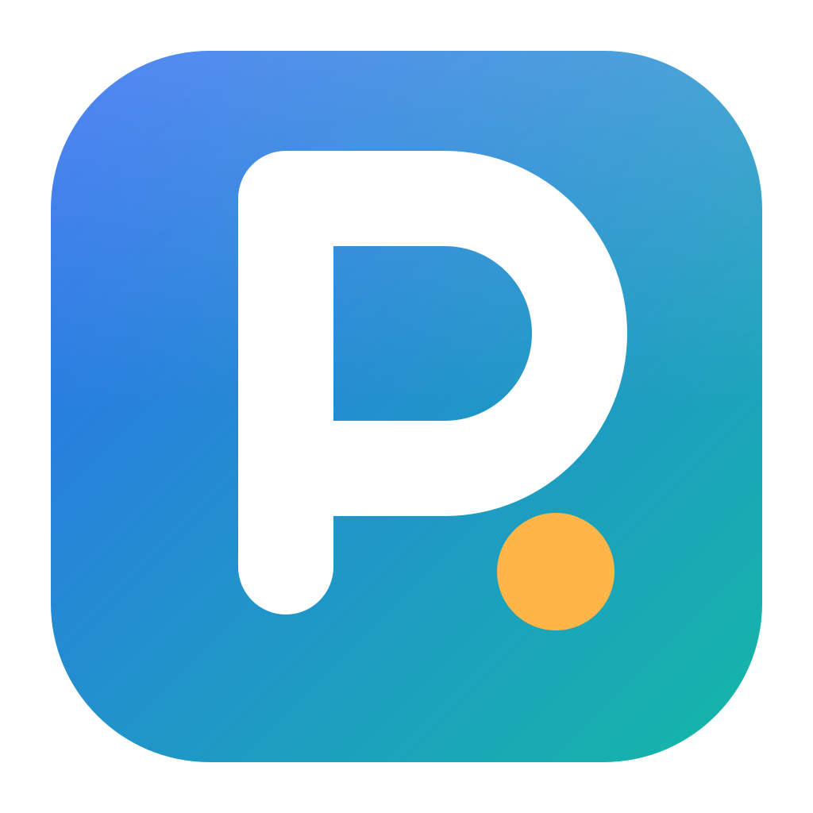
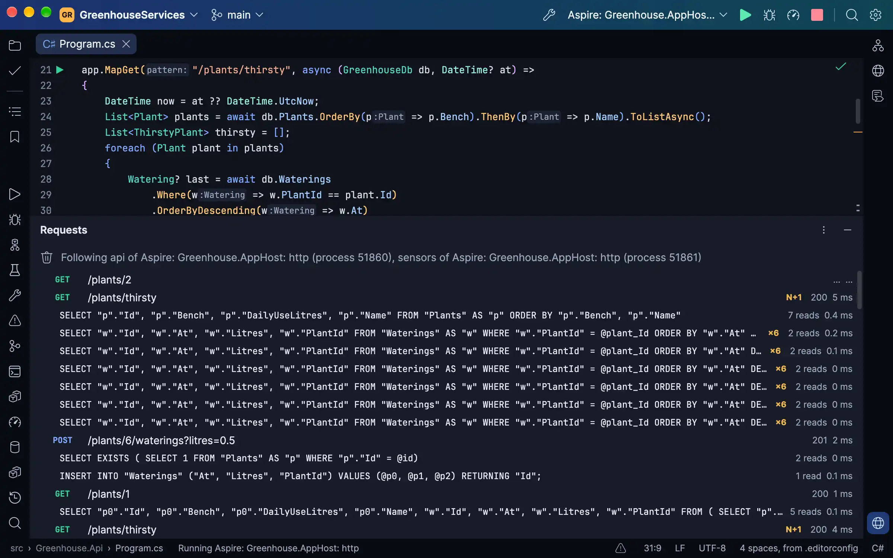

PassengerDebug the whole stack.The free IDE for
C# and .NET.
Docker Compose and Aspire services debugged and profiled, every request with its SQL, EF Core migrations, and your coding agent driving it all.

PassengerDocker Compose and Aspire services debugged and profiled, every request with its SQL, EF Core migrations, and your coding agent driving it all.
